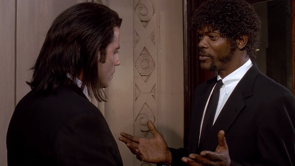

Well, you know the shows on TV?
Yeah, but you are aware that there is an invention called television, and on this invention they show shows, right?
Well, the way they make shows is, they make one show. That show's called a pilot. Then they show that show to the people who make shows, and on the strength of that one show they decide if they're going to make more shows. Some pilots get picked and become television programs. Some don't, become nothing.
She starred in one of the ones that became nothing.